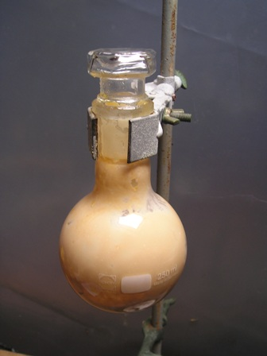
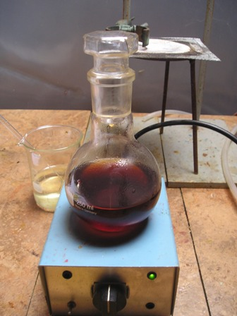
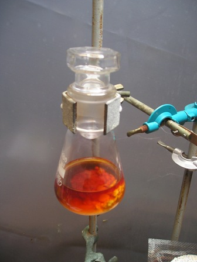
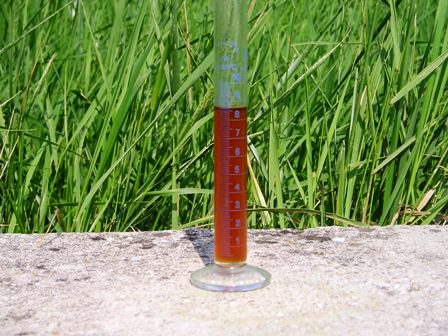

Allora andiamo avanti con il nostro "Autan"?
Fatto il toluilcloruro? Siamo belli calmi e sicuri? Allora possiamo partire per la seconda parte della sintesi, che tanto per cambiare... è peggio della prima!
Rinnovo quindi le precauzioni operative già date; questa fase va svolta tassativamente all'aperto (visto che le cappe professionali non sono così comuni in home lab), con guanti e quant'altro.
Veteria perfettamente asciutta anche in questo caso.
Materiale occorrente per la seconda parte
- cloruro di toluile
- dietilammina
- etere
- vetreria opportuna
In un pallone da 250 ml porre il toluilcloruro precedentemente prodotto ed aggiungere 100 ml di etere anidro.
Devo dire di aver soprasseduto su questo particolare e di aver usato l'etere che avevo così com'era. Sicuramente la resa finale sarebbe migliore usando etere effettivamente anidro.
Raffreddare e preparare a parte una soluzione di 35 ml di dietilammina (attenzione!) e 70 ml di etere anidro.
Ora viene la parte lunga e fastidiosa: aggiungere goccia a goccia, mentre si mescola vigorosamente il pallone, l'ammina al cloruro.
La reazione è estremamente energica, quasi come mettere ammoniaca nell'H2SO4 conc... quindi RI-attenzione! Si ha istantanea formazione del cloruro di dietilammina sotto forma di un precipitato bianco-beige voluminoso, che riempie ben presto tutto il pallone.

Quando tutta l'ammina è stata immessa, mescolare per una decina di minuti.
Aggiungere ora 70 ml di NaOH al 10% e tenere in agitazione per altrettanto tempo.
Con i reagenti ancora presenti si forma il sale sodico solubile dell'acido m-toluico, eventuale tionilcloruro viene distrutto ed è solubile pure il cloruro dell'ammina in eccesso; rimane quindi un liquido lmpido rossastro diviso in due fasi.

Separare la fase eterea superiore, lavarla con un po' di soluzione di NaOH e riseparare.Lavare ora la fase eterea con 50 ml di HCl al 10% e poi con altrettanta acqua.
Anidrificare con una spatolata di Na2SO4 o altro essiccante e lasciar agire fino a che il liquido sarà limpido.

Eliminare l'etere in eccesso mediante evaporazione; io ho lasciato la soluzione in recipiente aperto e arieggiato fino a che tutto l'etere è evaporato.Purtroppo la dietiltoluammide grezza è sempre di colore bruno rossastro, dovuto ad impurezze ineliminabili durante la sintesi.
Andrebbe purificata su colonna con allumina ed esano (operazioni che ovviamente non posso fare per non perdere tutta la piccola quantità prodotta... mi basta il principio).
La resa è stata di 8,2 ml, pari a circa il 53% sull'acido toluico; dopo tutti i passaggi mi ritengo anche troppo soddisfatto.
Quando feci la sintesi avevo scritto: -"ora che abbiamo fatto l'Autan originale, la DEET è stata sostituita commercialmente con l'icaridina. Che ci tocchi fare la sintesi anche di questa?"
Purtroppo no, nel frattempo... i tempi per le belle sintesi sono tramontati, non solo per me.
E questa appena presentata, probabilmente, sarà (sarà stata) l'ultima sintesi di un certo impegno. Eccola:

Ma la dietiltoluamide non è incolora? Certo che lo è, ma se l'avessi trattata con carbone attivo sarebbe stata bella ma me ne sarebbe rimasta troppo poca. Mi accontentai.